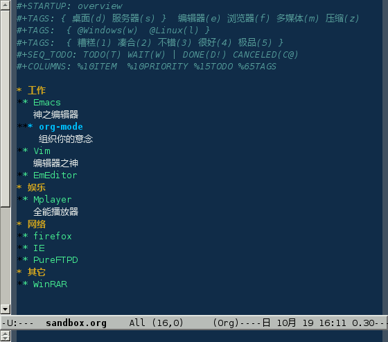
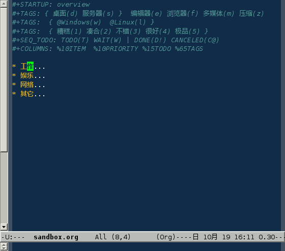
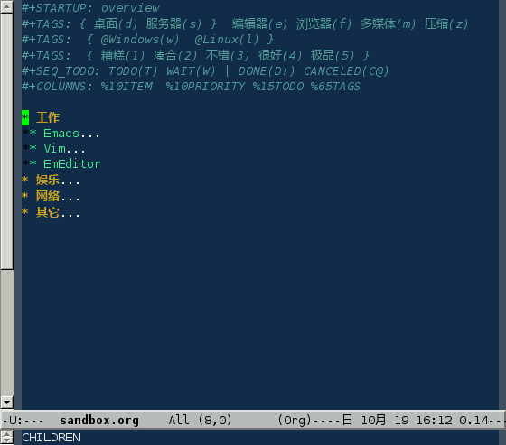

Org-mode 主要包含标签、待办、日程表几大部分
规模效应. 如果资料只有几十几百条，借助分类的方式可以有效管理，但是资料的条目超过了一定的数量，标签更管用。好比传统的邮箱，使用分类的方式管理邮件；而 Gmail 由于起点容量很大，所以提供了标签
组织. 提供了标签进行宏观控制，别外还有日程表作为快速通道
构思与发布. Org-mode 不但可以整理思路，而且拥有比较完善的发布功能
首先对 Org-mode 进行一些简单的配置，在 .emacs 文件中写入：
(setq org-hide-leading-stars t)(define-key global-map "\C-ca" 'org-agenda)
(setq org-log-done 'time)

|
只高亮显示最后一个代表层级的 * |
|
C-c a 进入日程表 |
|
给已完成事项打上时间戳。可选 note，附加注释 |
新建一个名为 sandbox.org 的文件[82]，头部内容如下：
#+STARTUP: overview#+COLUMNS: %10ITEM %10PRIORITY %15TODO %65TAGS

![[提示]](images/tip.png) |
提示 |
|---|---|
这里的内容可以随时更改，但是要记得在改后用 C-c C-c 刷新设置 |
|
启动时概览 |
|
设定标签，括弧中的为标签快捷键（如果没有指定，默认为首字母）。可以设置在多行中 |
|
花括号为标签组，组中的标签只能选一个 |
|
设定待办状态。将项设置为 | 后面的状态时（DONE CANCELED），会打上 CLOSED 标志 |
|
设定列视图 |
在这个新建的文件中插入下面内容：
* 工作
** Emacs
神之编辑器
*** org-mode
组织你的意念
** Vim
编辑器之神
** EmEditor
* 娱乐
** Mplayer
全能播放器
* 网络
** firefox
** IE
** PureFTPD
* 其它
** WinRAR
-
*之后有一个空格，一定不能省略 -
每一个
*代表一级分支，***就代表第三级分支
现在你的 Emacs 应该显示这样的内容

其实这就是一个大纲模式，只是 Org-mode 用更醒目的色彩来显示，并且快捷键方便一些
按下 S-TAB，会显示概览：

把光标定位在 * 工作 这一行，按几下 TAB

|
提示 |
|---|---|
连续按下 |
以下快捷键控制 Org-mode 显示
| C-c C-a | 全部显示 |
| C-c C-x b | 在一个新缓冲区中显示当前分支 |
当一个 org 文件内容很多时，使用 Emacs 的快捷键移动就很没有效率，可以使用 Org-mode 内建的移动键
| 向前 | 向后 | |
|---|---|---|
| 同级 | C-c C-f | C-c C-b |
| 跨级 | C-c C-n | C-c C-p |
| 上一级 | C-c C-u | |
| 跳转 | C-c C-j | |
对分支结构进行修改：
| C-RET | 加入新的同级标识 |
| M-left | 将当前项提升一级 |
| M-right | 将当前项降低一级 |
| M-S-left | 将当前分支提升一级 |
| M-S-right | 将当前分支降低一级 |
| M-S-up | 将当前分支向上移动 |
| M-S-down | 将当前分支向下移动 |
| C-c C-x C-k | 删除当前分支 |
| C-c C-x M-w | 复制当前分支 |
| C-c C-x C-y | 粘贴分支 |
| C-c C-w | 移动当前分支 |
| C-c * | 为当前分支加入内容 |